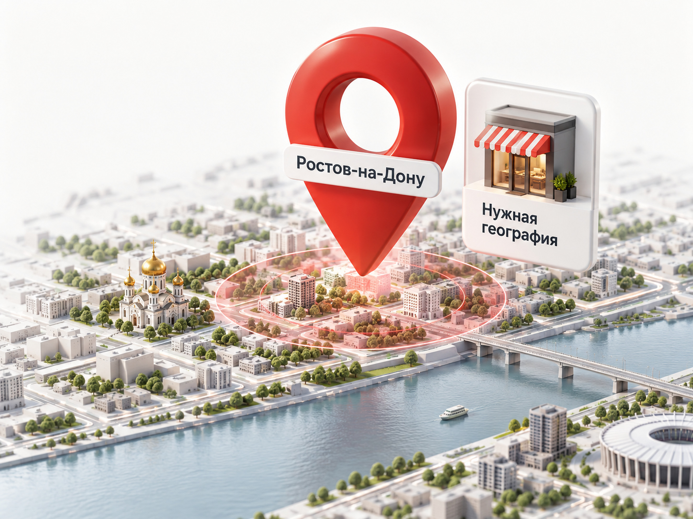

Частный специалист по Яндекс Директу
Директолог в Ростове-на-Дону
Меня зовут Максим Мирошников. С 2014 года я настраиваю и лично веду Яндекс Директ для компаний Ростова-на-Дону и других регионов России. Стоимость моей работы от 30 000 ₽ в месяц, рекламный бюджет оплачивается отдельно.
Работаю удалённо как ИП, по договору и через ЭДО. В портфолио более 40 кейсов из сферы услуг, недвижимости, образования и B2B. До запуска изучаю продукт, сайт и возможности привлечения заявок.
Какие услуги директолога я оказываю
Беру на себя настройку, ведение и проверку действующей рекламы. Состав работ зависит от состояния кампаний и задач бизнеса.
- Настройка Яндекс Директа с нуля. Изучаю спрос, конкурентов и посадочную страницу, подбираю запросы и аудитории, создаю объявления, настраиваю кампании и проверяю цели Метрики перед запуском.
- Ведение рекламы. Анализирую поисковые запросы, площадки РСЯ, стратегии, расходы и обращения. Убираю неэффективные направления, перераспределяю бюджет и проверяю новые гипотезы.
- Аудит действующих кампаний. Выясняю, почему заявок мало, они дорогие или не подходят бизнесу. Сначала использую накопленную статистику; работающие кампании без необходимости не пересоздаю.
- Аналитика заявок. Проверяю цели, UTM-метки и данные Метрики. Если у компании есть CRM и доступ к данным, оцениваю квалифицированные обращения и продажи, а не только отправки форм.
Подробный состав работ: что входит в услуги директолога.
Настройка Яндекс Директ для бизнеса в Ростове-на-Дону
Реклама местной компании должна учитывать территорию, на которой она действительно принимает клиентов. Для одних задач достаточно Ростова-на-Дону, для других нужны Батайск, Аксай или вся Ростовская область. Географию определяю по зоне обслуживания бизнеса, а не по формальному адресу.
Проверяю запросы с названиями города и районов, настройки геотаргетинга и фактическую географию обращений. Если компания работает только в определённых районах, важно не оплачивать заведомо нецелевые переходы из других мест.
Смотрю и на посадочную страницу: посетитель должен сразу увидеть нужную услугу, условия и способ связи. Иначе даже подходящий рекламный трафик не превращается в обращения.

Как проходит работа над рекламой
- Изучаю проект. Разбираю продукт, сайт, спрос и прежнюю рекламную статистику, если она есть. Выясняю, какие обращения бизнес считает целевыми.
- Согласовываю план. Определяю приоритетные услуги, географию, посадочные страницы, подходящие кампании и порядок тестирования гипотез.
- Настраиваю и запускаю. Проверяю Метрику и цели, готовлю объявления, выставляю бюджетные ограничения и контролирую первые данные после запуска.
- Веду и корректирую. Сравниваю расходы с количеством и качеством заявок, корректирую кампании и обсуждаю с заказчиком изменения, влияющие на результат.
Если реклама уже запущена, начинаю с её проверки. Пересоздавать кампании только ради новой структуры не требуется.
Как оцениваю эффективность: от трафика до продажи
Для меня основной показатель зависит от того, что бизнес получает после заявки. В Метрике можно увидеть обращения и их стоимость. Если есть данные CRM, дополнительно смотрю, сколько заявок прошли квалификацию и сколько превратились в клиентов.
Например, две кампании могут давать одинаковую стоимость заявки, но разную долю целевых обращений. В таком случае ориентироваться только на CPL недостаточно. При наличии данных о продажах оцениваю и стоимость привлечённого клиента.
Для этого сопоставляю рекламные расходы, источники заявок и результаты их обработки. Если нужных данных пока нет, сначала проверяю корректность целей и учёта обращений, а уже потом делаю выводы об эффективности.
Примеры результатов в Яндекс Директ
Недвижимость, trade-in, Екатеринбург. В мае и июле 2025 года реклама привела 83 заявки по 1774 ₽, из них 70 квалифицированных. Для проекта подготовили отдельную посадочную страницу и использовали данные о прохождении квиза при оптимизации рекламы. Кейс агентства недвижимости с подробными показателями.
Визовые услуги, ЮФО. При сравнении периодов ноября 2018 года и апреля 2019 года стоимость заявки снизилась с 1290 до 434 ₽ по показателям, вынесенным в название кейса. В работе изменили структуру кампаний, минус-слова и географию показов. Кейс визового центра со статистикой до и после.
Это результаты конкретных проектов за указанные периоды. Они не являются прогнозом или гарантией такой же стоимости обращения для нового бизнеса.
Посмотреть все кейсы Яндекс Директа.
Сколько стоят услуги директолога в Ростове-на-Дону
Первый месяц работы стоит 30 000 ₽. За это время разбираю исходные данные, запускаю рекламу или корректирую существующие кампании и получаю первые результаты для анализа.
Дальнейшее ведение стоит от 30 000 ₽ в месяц. Цена зависит от количества направлений, кампаний и объёма задач. Рекламный бюджет оплачивается отдельно и не входит в стоимость услуг.
По согласованию возможны индивидуальные условия с KPI или процентом от рекламного бюджета. Разовая настройка тоже возможна, если затем рекламу будет вести сотрудник компании. Конкретный состав работ и оплату фиксируем до начала сотрудничества.
Подробнее: стоимость услуг директолога и что на неё влияет.
Почему со мной работают напрямую
Я веду проекты лично: изучаю статистику, меняю настройки, проверяю обращения и обсуждаю решения с заказчиком. Между клиентом и рекламным кабинетом нет аккаунт-менеджера, которому нужно отдельно пересказывать задачу.
Могу обратить внимание и на проблемы за пределами Директа: неясное предложение на сайте, неудобную форму или обращения, которые теряются при обработке. Это помогает понять, где именно реклама перестаёт приносить бизнесу результат.
Работаю удалённо с компаниями Ростова-на-Дону и других регионов России. Сотрудничество оформляю как ИП: договор, ЭДО и закрывающие документы.
Как начать сотрудничество
Напишите, чем занимается компания, пришлите ссылку на сайт и укажите, в каких городах нужны клиенты. Сообщите, запускали ли Яндекс Директ раньше и какой результат хотите получить. Если кампании действуют, полезно приложить основные показатели или дать доступ к статистике на просмотр.
После изучения исходных данных скажу, какие задачи стоит решить в первую очередь и какой формат работы подойдёт проекту.
Связаться со мной: Telegram или MAX.
Частые вопросы
Чем директолог отличается от контекстолога?
Директолог обычно работает с Яндекс Директом. Контекстологом также называют специалиста по контекстной рекламе. Для заказчика важнее конкретные задачи, опыт и условия сотрудничества.
Можно ли показывать рекламу только в Ростове-на-Дону?
Да. Географию можно настроить под Ростов-на-Дону или нужные территории области. После запуска проверяю, из каких регионов фактически приходят обращения.
Работаете ли вы с уже запущенными кампаниями?
Да. Сначала проверяю накопленную статистику, цели и текущие настройки. Если часть кампаний работает эффективно, сохраняю её.
Какой рекламный бюджет нужен дополнительно к оплате услуг?
Он зависит от ниши, географии, конкуренции и цели рекламы. Оцениваю бюджет после знакомства с проектом. Сумма на рекламу оплачивается отдельно от моих услуг.
Вы работаете только в Ростове-на-Дону?
Нет. Я веду проекты удалённо по России, в том числе для компаний Ростова-на-Дону и Ростовской области.
Можно ли гарантировать определённую стоимость заявки?
Нет. До запуска можно рассчитать ориентир, но фактическая стоимость зависит от спроса, конкуренции, сайта, предложения и обработки обращений.